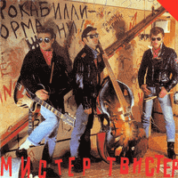

Мистер Твистер - Мистер Твистер (Album, 1990)
01 - Давай! (2:16)
02 - Мы Расстались (2:22)
03 - Блюз Для Ю. (3:20)
04 - Рок Вокруг Дискотеки (2:30)
05 - Страна Нежности (3:47)
06 - Shake, Rattle & Roll (3:04)
07 - Вечер Рок-н-Ролла (2:05)
08 - Рокабилли-Рок (2:25)
09 - Рок-н-Ролл Без Валидола (2:13)
10 - Блюз Пухлых Рук (2:40)
11 - Арбатский Шаффл (2:23)
12 - Московские Ночи (3:59)
13 - Рок-терапия (3:01)
14 - У Самого Синего Моря (2:02)
15 - (Я Часто Слышу) Вопрос (2:35)
© Мелодия :: [C60 29661 008] © GMC 2013 :: [Digital]
Notes
Review
330/366 (Project 366)
This week I decided to do review of releases with performing songs in the local (for the band) language. The first will be from Russia in the 1980s. Mister Twister (Мистер Твистер).
Quite an interesting thing and an entertaining way of Rock'n'Roll Rockabilly. The sound is filled with both a general understanding of style and something like Revival times, but also with a pop musical perception. In some ways it resembles fine amateur performance of very musically enthusiastic youth. Although it contains more of the accumulated power of rock music. Sounds pretty inspiring with its stylish approach and, let's say, an attempt to create an atmosphere. Although there are a lot of calm, melodic and ballad things - still a rather ebullient way of jivin 'and dancing, swingin' around and rockin' all night out. A bit schlager mood and basically driving, but melodic sound with very 90s vibe and smacks of dudes.